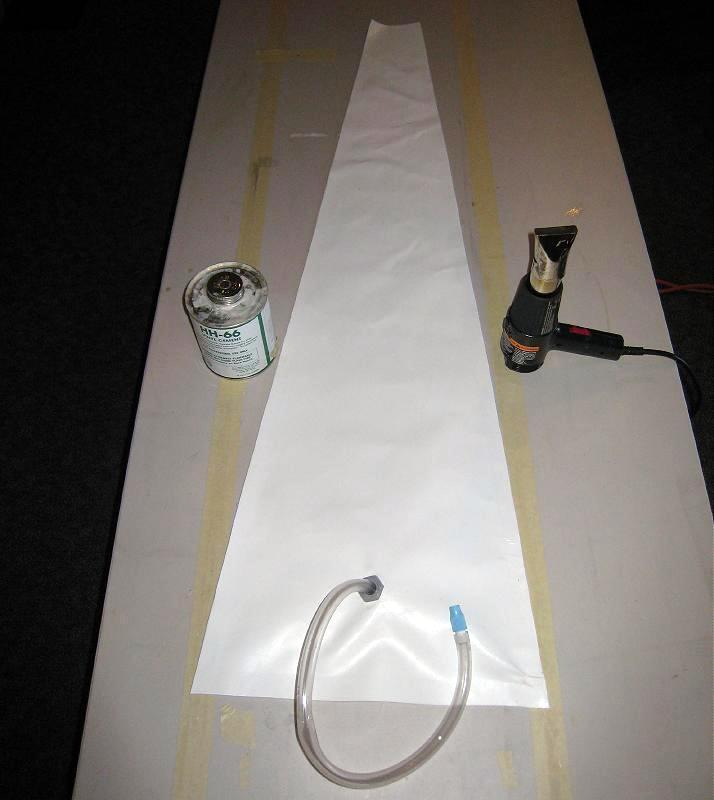

| PVC Floatation Bag ( page 8 of 8 ) | Menu Previous Page Next Page |
|

Apply 1 or 2 coats glue with a small brush to each section of the bag, allow to dry completely. The two sections of the bag are overlayed evenly with heat and pressure being applied to create an airtight seal. Glue the vinyl hose to the flange and to the twist valve. Review the "Sponson" instructions for further details.
|
|